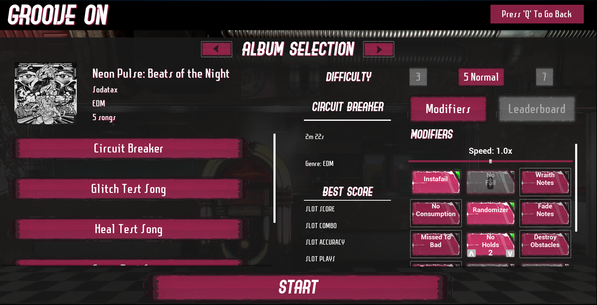
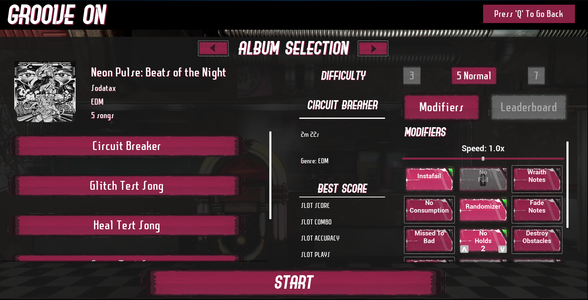

Rhythmic Radiance


 

Project Radiance is a multi-lane rhythm game that features vTuber music and collaborations.
I am the lead engineer for Project Radiance and I helped Kuneho Studios develop a demo for GDC 2024 after joining the team in January 2024. I designed and implemented the game's core systems, including the rhythm engine, the lane change system, the note spawning system, and the dynamic beatmapping system. There are a number of different note types in the game, including hold notes, emp notes, lane change notes, and heal notes. I also worked on other game features such as a testing mode that allows our designers to playtest beatmaps by jumping to a specific beat in the song, speed up or slow down the song, and toggle the ability to take damage. Additionally, I worked on implementing power ups/modifiers for songs such as time dilation, fade notes, wraith notes, instant fail, no fail, note randomization, and no hold/no emp notes which can make a song easier or harder and provide a point multiplier based on the difficulty.